Actor Model in
Robert Buchalski
Łukasz Drygała
Inspect
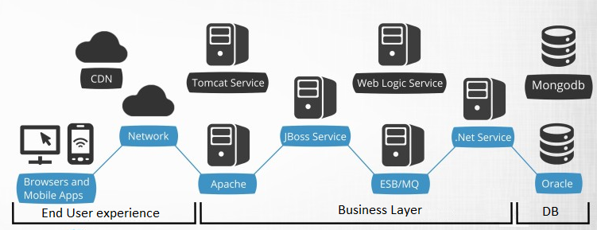Performance "Big picture"
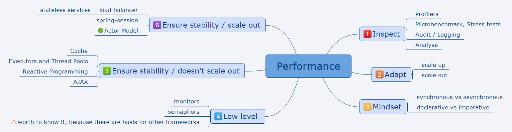Adapt techniques
- scale out (scale horizontally) - more nodes to a system, such as adding a new computer to a distributed software application
- scale up (scale vertically) - add resources to a single node in a system, typically involving the addition of CPUs or memory to a single computer
Actor Model
- defined in the 1963 paper by Carl Hewitt popularized by the Erlang languageEricsson build highly concurrent and extremely reliable (99.9999999 % availability – 31 ms/year downtime) telecom systems based on actor model
Actor
- encapsulate the behavior and state
- are location transparent & distributable
- never interact directly with each othercommunicate via messages
- share nothing
- process a single message at a time
Actor is an modern alternative to what is already known
Message
- should have good name and rich semantic and domain specific meaning
- must be immutable
Actor model abstraction
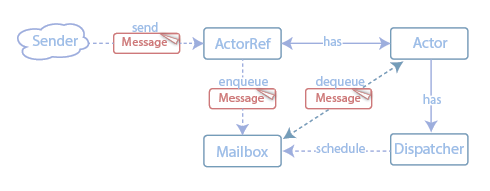Sample actor patterns
Router
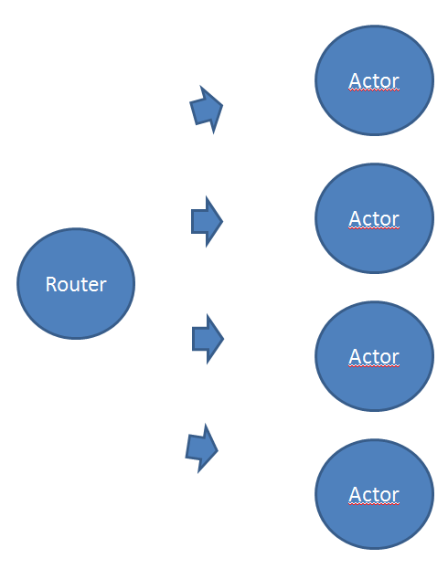Domain divide
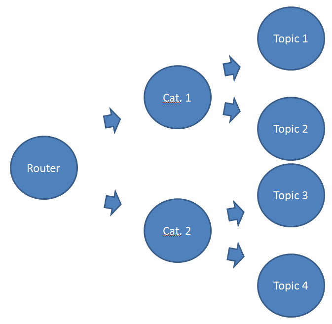Cache
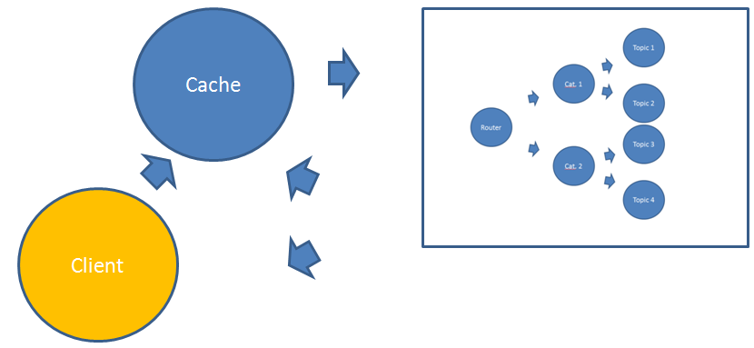Queue
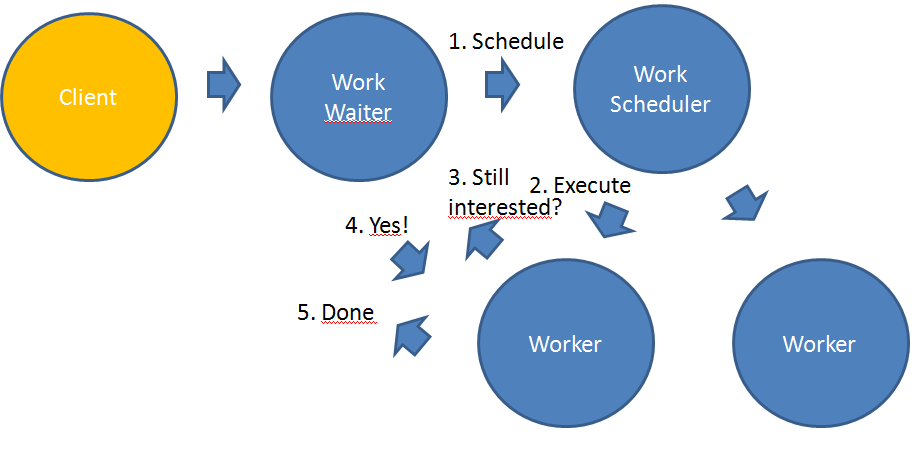Business Areas (DDD)
- Transaction processing (Online Gaming, Finance/Banking, Trading, Statistics, Searching, Social Meida, Telecom)
- Communication Hub (Telecom, Web Media)
- Business Intelligence / Data Mining
Concurrency is applied everywhere, where groups of people perform information transformation
Sample problems (solved by Akka)
Actor model is applied in almost all business areas
Work Breakdown Structure decomposites project into lower level, Organisational Breakdown Structure assign tasks to employees
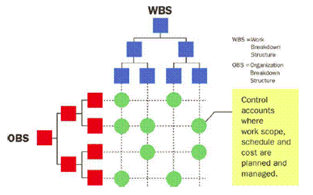Real life model

- toolkit for building highly concurrent, distributed, and fault-tolerant event-driven applications
- can be used with both Java and Scala
- most powerful features of Akka is its Actor Model of concurrency
Our messages
WhoToGreet- redefines the new greetingGreet- asks the Actor for latest greetingGreeting- returns the latest greeting
Messages in Java
public static class Greet implements Serializable {}
public static class WhoToGreet implements Serializable {
public final String who;
public WhoToGreet(String who) {
this.who = who;
}
}
public static class Greeting implements Serializable {
public final String message;
public Greeting(String message) {
this.message = message;
}
}
Messages in Scala
case object Greet
case class WhoToGreet(who: String)
case class Greeting(message: String)
Actor in Java
- extends
UntypedActor - implement
onReceivemethod
public static class Greeter extends UntypedActor {
String greeting = "";
public void onReceive(Object message) {
if (message instanceof WhoToGreet)
greeting = "hello, " + ((WhoToGreet) message).who;
else if (message instanceof Greet)
getSender().tell(new Greeting(greeting), getSelf());
else unhandled(message);
}
}
Actor in Scala
- extends
Actor - implement
receivemethod
class Greeter extends Actor {
var greeting = ""
def receive = {
case WhoToGreet(who) => greeting = s"hello, $who"
case Greet => sender ! Greeting(greeting)
}
}
Create Actor
- can't create instance of Actor using
new - create Actor using
ActorSystem.actorOffactory methodit return ActorRef pointing to Actor instance - factory method takes:
Propsconfiguration objectName which must be uniqe in
ActorSystem ActorSystemacts as container for Actors, managing their life-cycles
Java
ActorSystem system = ActorSystem.create("system");
ActorRef greeter = system.actorOf(Props.create(Greeter.class), "greeter");
Scala
val system = ActorSystem("system")
val greeter = system.actorOf(Props[Greeter], "greeter")
Send Message to Actor
- pass message into
tellmethod onActorRefthis put message on the actor's mailbox - actor's mailbox is essentially a message queue ordering of multiple messages sent from the same Actor is preserved
Delivery strategies
- at-most-once
- at-least-once
- exactly-once
Java
greeter.tell(new WhoToGreet("akka"), ActorRef.noSender());
Scala
greeter.tell(WhoToGreet("akka"), ActorRef.noSender)
// or
greeter ! WhoToGreet("akka")
Replying to an Actor
- request-replay style of communication
- we need reference to sender
- add reference of yourself as part of the message directly supported by Akka
- put reference to yourself in constructor
The 'self' reference
reference to your own ActorRef
Java
// From within an Actor
greeter.tell(new Greet(), getSelf());
Scala
// From within an Actor
greeter.tell(Greet, self());
// Or
greeter ! Greet
The 'sender' reference
- will be available in the receiver Actor when it's processing the message
- each message is paired with its unique sender reference
- the "current" sender reference will change with each new message you process
Java
// From within the Greeter Actor
getSender().tell(new Greeting(greeting), getSelf());
Scala
// From within the Greeter Actor
sender() ! Greeting(greeting)
Inbox
- allows you to create an "actor-in-a-box" contains an Actor which can be used as a puppet for sending messages to other Actors and receiving their replies
- create an
InboxusingInbox.create - send messages using
inbox.send - internal Actor will just put any message it receives into a queue
- messages can be retrieved by calling
inbox.receiveif the queue is empty then that call will block until a message becomes available
Inbox in Java
// Create an "actor-in-a-box"
final Inbox inbox = Inbox.create(system);
// Tell the 'greeter' to change its 'greeting' message
greeter.tell(new WhoToGreet("akka"), ActorRef.noSender());
// Ask the 'greeter for the latest 'greeting'
// Reply should go to the mailbox
inbox.send(greeter, new Greet());
// Wait 5 seconds for the reply with the 'greeting' message
Greeting greeting = (Greeting) inbox.receive(Duration.create(5, "seconds"));
System.out.println("Greeting: " + greeting.message);Inbox in Scala
// Create an "actor-in-a-box"
val inbox = Inbox.create(system)
// Tell the 'greeter' to change its 'greeting' message
greeter ! WhoToGreet("akka")
// Ask the 'greeter for the latest 'greeting'
// Reply should go to the mailbox
inbox.send(greeter, Greet)
// Wait 5 seconds for the reply with the 'greeting' message
val Greeting(message) = inbox.receive(5.seconds)
println(s"Greeting: $message")
Router strategies
- Random
- Broadcast
- RoundRobin
- ScatterGatherFirstCompleted
- SmallestMailbox
- ConsistentHash
Random
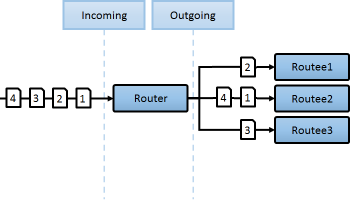Broadcast

RoundRobin

ScatterGatherFirstCompleted

SmallestMailbox

ConsistentHash
uses consistent hashing to select a connection based on the sent message

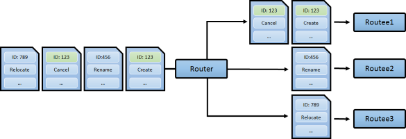
Supervision
Top-Level Supervisors

Supervision strategies
- One-For-One Strategy
- All-For-One Strategy
Supervisor options
- Resume the subordinate keeping accumulated internal state
- Restart the subordinate clearing out accumulated internal state
- Stop the subordinate
- Escalate the failure
Default Supervisor Strategy
ActorInitializationExceptionwill stop the failing child actorActorKilledExceptionwill stop the failing child actorExceptionwill restart the failing child actor- Other
Throwablewill escalate to parent actor
Real case: bank transfer
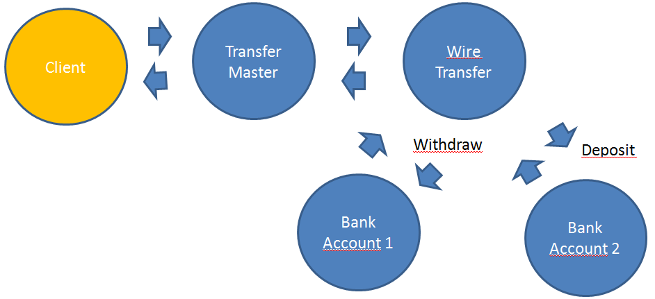What next ?
- Akka Streams
- Akka Http
- Akka Persistence
- Akka Cluster
- Actor Testing
Based on
- http://www.typesafe.com/activator/template/hello-akka
- http://getakka.net/docs/Reouting
- http://letitcrash.com/
- http://akka.io
- Akka in Action